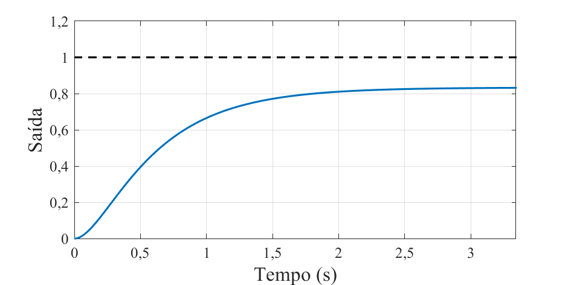

O controle de sistema abrange diversos tipos de problemas, os quais apresentam características distintas. Dentre os principais tipos de problemas de controle controle, existem dois objetivos que são mais comuns: o controle regulatório e controle servo. A seguir, serão apresentadas as principais características desses dois tipos de objetivos de controle.
O controle regulatório consiste em manter uma variável de processo em um valor constante, mesmo na presença de perturbações externas. O objetivo do controlador neste cenário é manter a estabilidade do sistema e rejeitar as perturbações, sendo utilizado em sistemas onde o principal objetivo é manter a operação do mesmo em volta de condições fixas.
O controle servo, por sua vez, consiste em seguir um valor de referência variável no tempo (trajetória ou referências dinâmicas). Este problema de controle é focado no rastreamento de referências, sendo o objetivo garantir que o sistema responda de maneira rápida às mudanças na referência e atinja os valores de referência sem erro em regime permanente.
Exemplo 2: Controle servo de um manipulador robótico
A realimentação (proveniente do termo em inglês “feedback”) é um dos princípio fundamentais em sistemas de controle, sendo amplamente utilizado para alcançar os principais objetivos do sistema de controle, garantir que uma variável controlada atinja e mantenha um valor desejado (referência). Em sistemas de controle realimentado, onde desejamos controlar o sistema representado pela função de transferência \(G(s)\), a saída do sistema, \(Y(s)\), é medida e comparada com a referência, \(R(s)\), produzindo um sinal de erro, \(E(s)\). Esse sinal de erro é alimentado como entrada no controlador, representado por \(C(s)\), o qual será responsável por produzir o sinal de controle, \(U(s)\), capaz de corrigir desvios na saída medida, compensando perturbações, representadas por \(P(s)\).
Um sistema realimentado apresenta a estrutura básica apresentada no diagrama a seguir.
Nesse sistema de controle \(C(s)\) deve ser projetado, de forma garantir que o sistema de controle - como um todo - apresente o comportamento dinâmico desejado. De forma geral, o que é desejado é que o controlador apresente alguma/todas as seguintes características:
Estabilidade;
Erro nulo em regime permanente para determinada entrada;
Comportamento dinâmico (tempo de acomodação, sobressinal, …) conforme especificação.
Tanto a garantia da estabilidade, quanto do erro nulo em regime permanente, podem ser alcançadas verificando algumas condições básicas no sistema realimentado. Por sua vez, alcançar um comportamento dinâmico conforme determinada especificação requer um projeto cauteloso do controlador. Dessa forma, o caminho que é seguido, no projeto do controlador, consiste em compreender as condições para que tenhamos garantia de estabilidade e erro nulo em regime permanente para determinada entrada, conhecimento que é usado durante o projeto visando alcançar o comportamento dinâmico desejado. Dessa forma, a estabilidade e a garantia de erro nulo são “restrições” usada no projeto, o qual tem foco no comportamento dinâmico do controlador. A seguir, vamos analisar quais são as condições para que tenhamos uma malha de controle realimentado estável e que garanta erro nulo em regime permanente para diferentes entradas.
A estabilidade é uma característica de sistemas dinâmicos que é, geralmente, desejada em sistemas de controle realimentado. Existem alguns conceitos distintos de estabilidade que podem ser considerados, sendo o conceito da estabilidade assintótica (interna) o conceito usado quando nos referimos ao termo estabilidade no contexto desta disciplina. Nas seções a seguir, serão apresentados os critérios para verificação da estabilidade assintótica, e a avaliação da estabilidade de sistema realimentados.
A estabilidade assintótica - ou interna - é analisada em termos do comportamento dos modos característicos do sistema, sendo que, um sistema assintóticamente estável, terá todos os modos característicos convergindo para \(0\) à medida que o tempo tende ao infinito. A resposta de um sistema dinâmico LIT, seja para um estado inicial não nulo, ou para uma entrada não nula, será dependente dos modos caracteríticos do sistema, sendo que, sistemas cujos modos característicos são estáveis, convergirão para valores finitos quando excitados por entradas finitas.
Para avaliarmos a estabilidade assintótica de um sistema, devemos verificar a posição dos polos do sistema dinâmico, como segue:
Para um sistema ser classificado como assintóticamente estável, todas os polos do sistema devem estar no semi-plano esquerdo do plano complexo - polos com real negativa.
Caso exista algum polo localizado no semi-plano direito - polos com parte real positiva - o sistema é classificado como instável.
Se o sistema não contiver nenhum polo no semi-plano direito, porém, existirem polos sobre o eixo imaginario - parte real nula - o sistema será classificado como marginalmente estável ou como instável. O sistema será marginalmente estável se não existirem raízes iguais sobre o eixo imaginário - podem existir mais de uma raiz sobre o eixo imaginário, mas cada raiz está em uma posição distinta. Caso existam raízes iguais sobre o eixo imaginário, o sistema será instável.
Exemplo 3: Determinação da estabilidade de um sistema
Quando analisamos o comportamento de sistemas, a intuição geralmente induz a crença de que, se estivermos trabalhando com um sistema estável, ao criarmos um controlador estável, o resultado será um sistema de controle estável. Porém, essa concepção nem sempre é verdadeira, pois, ao criarmos uma malha de controle realimentada, o sistema resultante terá um comportamento dinâmico definido não apenas pelas funções de transferência do processo e do controlador, mas também pela estrutura do sistema realimentado, fazendo com que o sistema de controle seja capaz de apresentar comportamento instável.
Se analisarmos o sistema de controle genérico apresentado nas seções anteriores, vemos que a função de transferência em malha fechada, relacionando a entrada do sistema de controle - \(r(t)\) - com o sinal de saída - \(y(t)\) - é definida como
Os polos desse sistema realimentado são definidos pelo termo \(den(C(s))den(G(s)+num(C(s))num(G(s)\), o qual constitui o denominador da função de transferência em malha fechada. Note que, a ordem de \(den(C(s))den(G(s)+num(C(s))num(G(s)\), que define a quantidade de polos, será equivalente a soma da quantidade de polos de \(C(s)\) com a quantidade de polos de :math:G(s)``, se ambas funções de transferência \(C(s)\) e \(G(s)\) forem próprias (caracterizadas por um número maior ou igual de polos do que zeros). Caso o sistema for de segunda ordem, qualquer controlador com ordem a partir da primeira resultará em um sistema de controle em malha fechada com 3 ou mais polos, fazendo com que a obtenção da posição dos polos, de forma analítica, seja desafiadora. Uma forma de avaliar a estabilidade de sistemas com 3 ou mais polos, sem a necessidade da obtenção da posição dos polos é utilizando o método de Routh-Hurwitz, o qual é apresentado a seguir.
O método de Routh-Hurwitz pode ser usado para avaliar a estabilidade de sistemas lineares invariantes no tempo (LIT). Ele determina se um sistema é estável, analisando os coeficientes do polinômio característico que descreve o sistema (denominador da função de tansferência), sem a necessidade de calcular as raízes desse polinômio. O método de Routh-Hurwitz consiste em construir uma tabela, conhecida como tabela de Routh, a partir dos coeficientes do polinômio característico. A estabilidade do sistema é então determinada pela análise da primeira coluna desta tabela.
Partindo de uma função de transferência genéria, definida por
temos o polinômio característico definido por \(\Delta=a_n s^n+\dots+a_2 s^2+a_1 s^1 + a_0\). A partir do polinômio característico, podemos construir a tabela de Routh conforme o procedimento apresentado a seguir.
Tabela de Routh:
A tabela é composta por \(n+1\) linhas, o que é equivalente ao número de raizes mais 1.
A primeira linha é formada pelos coeficientes de \(s^n\), \(s^{n-2}\), \(s^{n-4}\), e assim por diante.
A segunda linha é formada pelos coeficientes de \(s^{n-1}\), \(s^{n-3}\), \(s^{n-5}\), e assim por diante.
As linhas subsequentes são calculadas usando a seguinte fórmula:
O elemento \(b_i\) é o valor a ser calculado na linha atual. O termo \(b_{i-1,1}\) é o primeiro elemento da linha anterior. O determinante deve ser calculado com elementos das duas linhas anteriores, com esse processo sendo executado até a tabela estar completa.
A tabela de Routh é usada para avaliar a estabilidade da função de transferência, que foi utilizada para obtenção da tabela, utilizando o critério de Hurwitz. Para que um sistema seja estável, é necessário que todas as raízes do polinômio característico tenham partes reais negativas. O critério de Hurwitz estabelece algumas condições algébricas para garantir essa propriedade sem precisar calcular explicitamente as raízes, apenas inspecionando a tabela de Routh.
Critério de Hurwitz:
O sistema será estável se, e somente se, não houver troca de sinal nos elementos da primeira coluna da tabela de Routh.
Se houverem trocas de sinal na primeira coluna da tabela de Routh, teremos um polo instável para cada troca de sinal.
Se houverem elementos nulos na primeira coluna, teremos um polinômio característico que possui raízes com parte real igual a zero, fazendo com que o sistema possa ser marginalmente estável ou instável.
A seguir são apresentados dois exemplos da utilização do método de Routh-Hurwitz.
Exemplo 4: Contrução da tabela de Routh e verificação do critério de Hurwitz
Neste exemplo, usaremos a tabela de Routh e o critério de Hurwitz para avaliar a estabilidade da função de transferência \(G(s)=\frac{3}{s^3+6s^2+3s-10}\).
O sistema é composto por 3 polos e nenhum zero. A tabela de Routh deverá ter \(n+1\) linhas, o que é equivalente a 4 linhas, cada uma nomeada com uma potência de \(s\).
Potência de s
Coluna 1
Coluna 2
Coluna …
s³
s²
s¹
s⁰
O número de colunas também será dependente do número de raízes. Teremos uma quantidade de colunas igual à \(\frac{n+1}{2}\), com arredondamento para cima. No caso do exemplo, teremos apenas 2 colunas. O preenchimento inicia com as duas primeiras linhas. Como a primeira linha é associada à uma potência ìmpar, \(s^3\), devemos preencher ela com os coeficientes associados às potências ímpares. A segunda linha, então, conterá os elementos associados às potências páres. Caso a primeira linha fosse associada à uma potência par, preencheriamos ela com os coeficientes associados às potências pares, e a segunda com os associados às ìmpares.
Potência de s
Coluna 1
Coluna 2
s³
1
3
s²
6
-10
s¹
s⁰
Caso faltem coeficientes para preencher o último elemento da segunda linha, devemos preencher com \(0\). Cada elemento das próximas linhas deve ser obtido utilizando a equação \(b_i = - (1/b_{i-1,1}) * \det([[a_{1,1}, a_{1,i+1}],[a_{2,1}, a_{2,i+1}]])\). Isso é equivalente à obtermos o determinante da matriz quadrada localizada diretamente acima e à direita do elemento calculado, e dividirmos o resultado pelo primerio elemento da linha acima multiplicado por \(-1\). Para o elemento da primeira coluna e terceira linha, devemos obter o determinante \(\begin{vmatrix}1 & 3 \\ 2 & 4\end{vmatrix}=24\), e dividirmos por \(-2\), o que resulta em
Potência de s
Coluna 1
Coluna 2
s³
1
3
s²
6
-10
s¹
14/3
0
s⁰
Quando não existem colunas à direita para termos um determinante, o elemento será \(0\). Podemos completar a matriz calculando os elementos da última linha
Potência de s
Coluna 1
Coluna 2
s³
1
3
s²
6
-10
s¹
14/3
0
s⁰
-10
0
Após completarmos a matriz, podemos utilizar o critério de Hurwitz para determinar a estabilidade do sistema. Como existe uma troca de sinal na primeira coluna da matriz, temos um polo instável no sistema, fazendo com que o sistema seja instável.
A seguir, temos um exemplo da análise de um sistema de controle, com o método de Routh-Hurwitz.
Exemplo 5: Análise da estabilidade de um sistema de controle com o método de Routh-Hurwitz
O método de Routh-Hurwitz pode ser usado para avaliar a estabilidade de um sistema de controle, mesmo considerando um sistema de controle com parâmetros ajustáveis. Para o sistema de controle apresentado a seguir, podemos determinar as condições para esse sistema ser estável conforme apresentado a seguir.
Para determinarmos a estabilidade do sistema de controle, devemos obter a função de transferência do sistema em malha fechada, a qual é \(G_{mf}(s)=\frac{k}{s^3+7s^2+10s+k}\). É evidente que o comportamento do sistema, bem como a estabilidade, serão dependentes do valor de \(k\). Para avaliar a estabilidade, iniciamos construindo a tabela de Routh, como segue.
Potência de s
Coluna 1
Coluna 2
s³
1
10
s²
7
k
s¹
s⁰
Após obtermos os termos restantes da primeira coluna, obtemos a tabela completa.
Potência de s
Coluna 1
Coluna 2
s³
1
10
s²
7
k
s¹
-(k-70)/7
0
s⁰
k
Para avaliarmos a estabilidade, usando o critério de Hurwitz, analisamos os valores da primeira coluna. Como os dois primeiros elementos são positivos, os demais devem ser estritamente positivos, para que tenhamos um sistema estável. Dessa forma, a condição para estabilidade é
\[\frac{-(k-70)}{7}>0\]
e
\[k>0\]
A primeira condição pode ser reescrita como
\[\frac{-(k-70)}{7}>0
k<70\]
Ou seja, o sistema será estável quando \(0<k<70\). Quando \(k=0\) ou \(k=70\), o sistema será marginalmente estável, e para valores fora desse intervalo, o sistema é instável.
Nesta seção vamos analisar o problema da garantia de erro nulo em regime permanente para diferentes entradas. Para introduzir esse problema, iniciaremos com um exemplo.
Exemplo 1: Para compreendermos o que é o erro em regime permanente, vamos analisar a resposta do sistema de controle apresentado a seguir.
Nesta malha de controle, podemos projetar o controlador \(C(s)\) buscando atingir algum tipo de objetivo. Caso escolhamos o controlador \(C(s)=5\), teremos a função de transferência em malha fechada \(G_{mf}=\frac{10}{s^2+8s+12}\). Dessa forma, os polos do sistema em malha fechada são \(s=-2\) e \(s=-6\), sendo a resposta do sistema, para um degrau unitário \(r(t)=u(t)`(o qual apresenta transformada :math:`r(s)=\frac{1}{s}\)), definida como segue.
A resposta desse sistema de controle, para uma entrada do tipo degrau unitário, é a soma de duas exponenciais decrescentes e um degrau unitário. A medida que o tempo tende a infinito, os termos exponenciais se aproximam de \(0\), com o termo \(\frac{5}{6}u(t)\) restando. Portanto, o sinal de referência é um degrau unitário, \(r(t)=u(t)\), porém, a resposta do sistema converge para \(y(t)=\frac{5}{6}u(t)\) quanto o tempo tende a infinito. É evidente que, em regime permanente - quando o tempo converge para infinito - o sistema apresenta erro não nulo. Se definirmos o erro de seguimento de referência como \(e(t)=r(t)-y(t)\), vemos que, em regime permanente, o erro tende a \(e(t)=\frac{1}{6}u(t)\). Esse resultado é apresentado na figura a seguir.

Como visto no exemplo, podemos verificar qual o erro em regime permanente ao analisarmos a resposta do sistema considerando o valor de referência desejado, e compararmos com com tal referência, o que resultado no sinal de erro. Ao verificarmos qual o valor desse erro a medida que o tempo tende ao infinito - que representa o regime permanente - temos uma estimativa do erro em regime peramenente. Realizar toda essa análise é trabalhosa e ela é apenas válida para a referência de entrada que foi testada. Por isso, será apresentada uma forma de análise sistemática do erro em regime permanente, a qual traz um resultado prático que subsidiará o projeto de controladores que garantam erro nulo para diferentes tipos de referências.
Quando temos um sistema de controle realimentado típíco, como o apresentado na figura a seguir, podemos encontrar funções de transferência que relacionam diferentes sinais. A função de transferência que relaciona a saída em malha fechada é a mais típica, sendo representada por \(G_{mf}=\frac{Y(s)}{R(s)}=\frac{C(s)G(s)}{1+C(s)G(s)}\).
Como desejamos analisar o erro em função do sinal de referência, podemos obter a função de transferência que relaciona tais sinais. Partindo do sinal de erro, podemos obter essa função de transferência como segue.
A partir dessa função de transferência, podemos obter o valor do erro para qualquer entrada \(R(s)\), substituindo o sinal de referência na equação a seguir.
\[E(s)=\frac{1}{[1+G(s)C(s)]}R(s)\]
Para obtermos o valor em regime permanente de \(E(s)\), podemos expandir a equação usando frações parciais e obtermos a transformada inversa. Porém, existe uma forma mais fácil para obtermos o valor do erro em regime permanente, que é utilizando o teorema do valor final.
Teorema do valor final
Para um sinal no domínio da transformada de Laplace, podemos obter qual será o valor dele, no domínio do tempo, para o tempo tendendo a infinito, com a seguinte equação.
\[\lim_{t\to \infty}x(t)=\lim_{s\to 0}X(s)s\]
Se aplicarmos o teorema do valor final para o sinal de erro, podemos obter o valor do erro em regime permanente - equivalente ao \(\lim_{t\to \infty}e(t)\).
Essa é uma expressão genérica, que pode ser utilizada para obter o erro em regime permanente para qualquer sinal de referência.
Exemplo 2: Retornamos para o problema analisado no Exemplo 1, no qual foi obtido o erro em regime permanente de uma malha de controle para uma referência do tipo degrau. A análise feita naquele exemplo será repetido, porém, utilizando a expressão do erro em regime permanente que foi derivada nesta seção.
Para obtermos o erro em regime permanente, devemos substituir as funções de transferência que definem a malha de controle na equação a seguir.
A equação obtida determina o erro para qualquer sinal de referência. Como queremos determinar o erro para referências do tipo degrau, devemos substituir \(R(s)=\frac{1}{s}\), obtendo a equação a seguir.
Na seção anterior foi obtida a expressão matemática para o erro em regime permanente. Utilizando essa equação, podemos determinar condições para alcançarmos erro nulo em regime permanente para as referências típicas, que são o degrau unitário e a rampa unitária. Para o degrau unitário, temos \(G(s)=\frac{1}{s}\), fazendo com que a expressão do erro em regime permanente seja a seguinte.
Para garantirmos erro nulo, é necessário termos \(\lim_{s\to 0}\frac{1}{[1+G(s)C(s)]}=0\). Se definirmos \(G(s)=\frac{\text{Num}(G)}{\text{Den(G)}}\), e \(C(s)=\frac{\text{Num}(C)}{\text{Den(C)}}\), podemos escrever a condição como \(\lim_{s\to 0}\frac{Den(G)Den(C)}{[Den(G)Den(C)+Num(G)Num(C)]}=0\). Tanto \(G(s)\), quanto \(C(s)\) apresentam numerador e denominador formados por polinômios, cuja estrutura consiste na multiplicação de termos \((s+a)\), onde \(a\) representa uma grandeza complexa.
A única configuração em que \(\lim_{s\to 0}\frac{Den(G)Den(C)}{[Den(G)Den(C)+Num(G)Num(C)]}=0\) consiste em um sistema realimentado no qual \(Den(G)Den(C)\) apresentam ao menos um termo \(s\). Isso é equivalente a termos um integrador no processo, \(G(s)\), ou no controlador, \(C(s)\), já que o integrador é definido como \(\frac{1}{s}\).
Condição para erro nulo em regime permanente para referência do tipo degrau
Para garantirmos erro nulo em regime permanente, para referência do tipo degrau, \(r(t)=u(t)\), é necessário existir um integrador, \(\frac{1}{s}\), ou no processo, \(G(s)\), ou no controlador, \(C(s)\).
Caso desejamos que o sistema apresente erro nulo para uma referência do tipo rampa, definida como \(r(t)=tu(t)\), temos o sinal de referência \(R(s)=\frac{1}{s^2}\). Se substituirmos na equação que define o erro em regime permanente, temos a seguinte equação.
Dessa forma, para termos erro nulo, é necessário \(\lim_{s\to 0}\frac{Den(G)Den(C)}{[Den(G)Den(C)+Num(G)Num(C)]s}=0\), o que só é alcançado se houver ao menos o termo \(\frac{1}{s^2}\) em \(\frac{Den(G){Den(C)}\). Isso é equivalente a termos um duplo integrador, ou considerando o processo, \(G(s)\), e o controlador, \(C(s)\). Essa condição é alcançada, ou tendo um duplo integrador em uma das funções de transferência, ou havendo um integrador simples em ambas funções de transferência.
Condição para erro nulo em regime permanente para referência do tipo rampa
Para garantirmos erro nulo em regime permanente, para referência do tipo rampa, \(r(t)=tu(t)\), é necessário existir um duplo integrador, \(\frac{1}{s^2}\), considerando o processo, \(G(s)\), e o controlador, \(C(s)\).
Note que, para uma referência do tipo degrau, é necessário que exista internamente, ao controlador ou processo, uma cópia do degrau. O mesmo ocorre para um sinal de referência do tipo rampa. Esse resultado é conhecido como Princípio do Modelo Interno, o qual define que, para que o erro do sistema de controle, \(E(s)\), decorrente da excitação de sinal de referência, \(R(s)\), possa ser eliminado, a função de transferência do sinal de referência, \(R(s)\), deve estar presente na função transferência em malha aberta \(G(s)C(s)\).